ГРАНИЧНІ ТЕОРЕМИ МУАВРА-ЛАПЛАСА
При великих значеннях чисел п послідовних незалежних випробувані, дім розв'язання задач схеми Бернуллі використовують граничні теореми Муавра Лапласа.
Локальна, гранична теорема:
1) Проводиться послідовність п незалежних випробувань, в кожному з
яких подія А може з'явитися з сталою імовірністю, такою що 0<р<1 тj
імовірність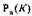 того, що подія А з'явиться в п випробуваннях рывно К
разів точно задовольняє асимптотичній рівності.
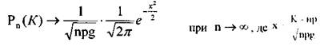
Із співвідношення цієї теореми слідує наближена рівність
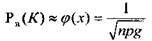
де функція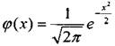- табульована.
При обчисленні треба мати на увазі, що функція 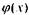 парна, тобто
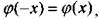 прямує до 0 при 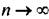, практично вже при
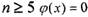 з точністю до чотирьох знаків.
Інтегральна теорема.
Проводиться послідовність п незалежних випробувань, в кожному і яких
подія А може появиться з сталою імовірністю, такою, що 0>p>1 тоді
імовірність того, що подія А настане не менше 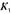 не більше 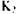 разів задовольняє асимптотичній рівності:
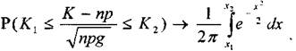
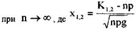
Із співвідношення цієї теореми слідує наближена рівність
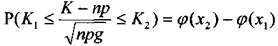
Де функція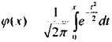табульована і, між іншим,
називається інтегралом Лапласа, або функцією Лапласа. Функцій Лапласа
а) непарна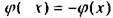
б) пряму» до , при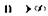, практично при 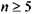 дорівнює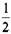
з точністю до чотирьох знаків.
Практично формули Муавра-Лапласа використовують коли п > 10.
ПРИКЛАД ЇХ ЗАСТОСУВАННЯ:
При виробництві вінчестерів для комп'ютерів спостерігався в середньому 10% браку
РОЗВ’ЯЗОК:
1) Тут п 100.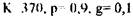
Гак що за локальною теоремою Муавра-Лапласа
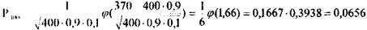
2)Тут п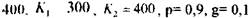
Таким чином, за інтегральною теоремою Муавра-Лапласа :
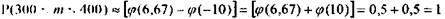
Це означає, що наявність в партії не менше 300 придатних вінчестерів можна вважати достовірним.